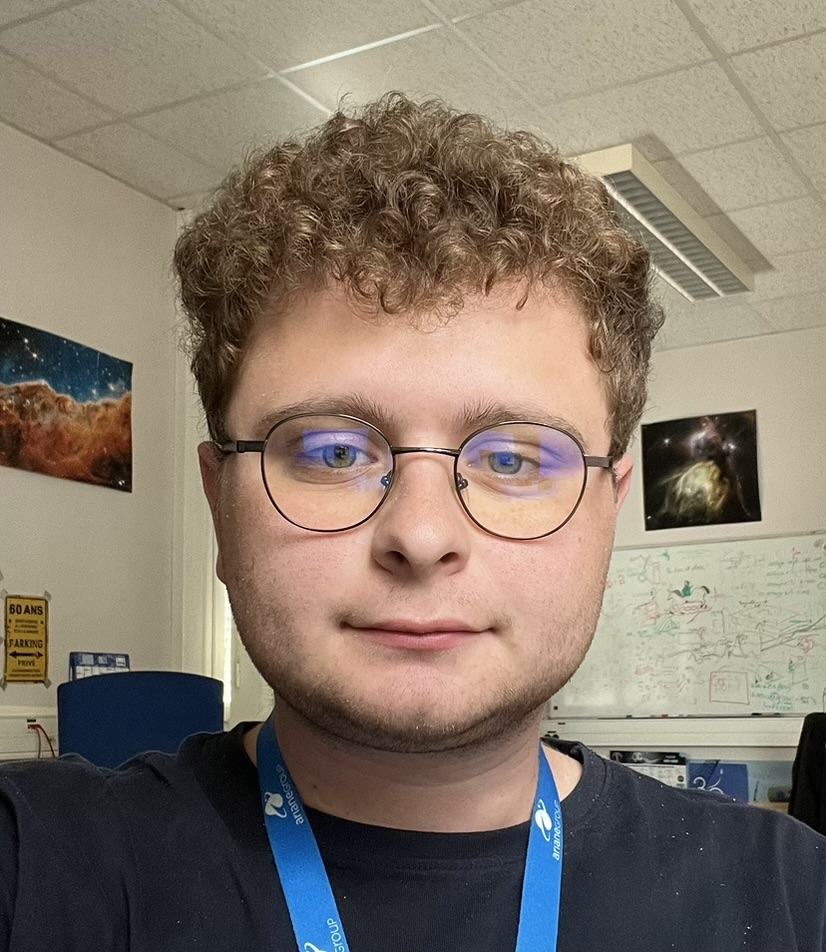
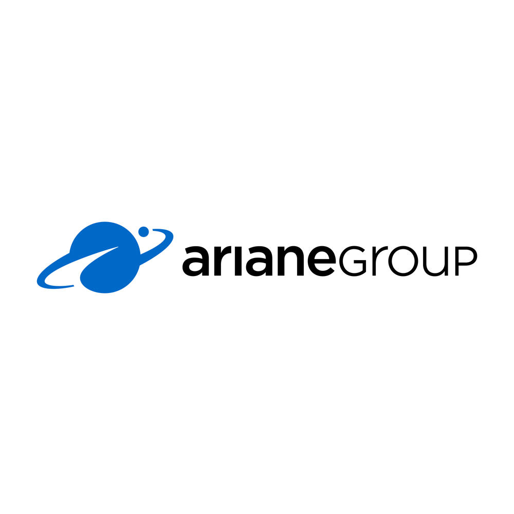
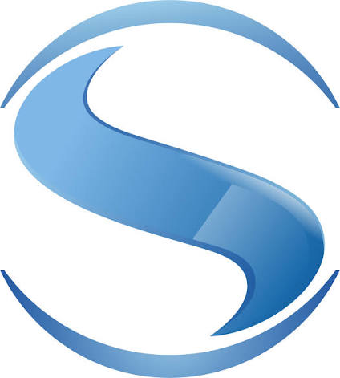

Étudiant ingénieur à l'INSA Rouen Normandie et apprenti chez ArianeGroup. Spécialisé dans la modélisation de chaînes de mesure, les contrôles non destructifs (CND) sub-microniques, la science des matériaux et le développement Python appliqué à l'industrie spatiale et aéronautique.
De la caractérisation sub-micronique de matériaux composites à l'optimisation prédictive de systèmes de mesures spatiales.


Une alliance entre rigueur d'ingénierie physique et passion pour le partage : de la modélisation à la vulgarisation des concepts fondamentaux de l'IA.
Un projet de vidéo pédagogique approfondie qui me tient à cœur : expliquer de façon intuitive et visuelle ce qui se cache sous le capot des modèles d'IA (réseaux de neurones, rétropropagation du gradient, mécanismes d'attention).
Modélisation de données, Traitement du Langage Naturel (NLP), pipelines temps réel et algorithmes prédictifs pour l'industrie.
Chaînes de mesure de vol, bilans d'incertitudes, tomographie RX sub-5µm (UltraTom), thermographie IR et contrôles avancés.
Matériaux composites pour la monoplace INSA Rouen Racing, composites céramiques (CMC), résistance des matériaux (RDM) et allègement.
Modélisation 3D avancée, conception d'outillages modulaires pour essais mécaniques, prototypage rapide et fabrication additive.
Un parcours académique marqué par l'excellence scientifique et technique.
Mécanique des solides et des fluides, modélisation 3D, gestion de projet industriel, optimisation des procédés et démarche qualité.
Spécialisation avancée dans l'inspection de matériaux et structures sans altération : tomographie et radiographie X, thermographie IR, ultrasons et ressuage.
Caractérisation physique, chimique et mécanique, élaboration et mise en forme des matériaux (composites, céramiques, polymères, alliages métalliques) et CAO.
Développement technologique, pédagogie universitaire et engagement citoyen.
Participation active au pôle matériaux de l'écurie Formula Student de l'INSA Rouen Normandie. Recherche, dimensionnement et caractérisation des matériaux composites de la monoplace de compétition. Calculs RDM, allègement structural et optimisation aérodynamique.
Conception et déploiement d'un agent IA multimodal intégré à Discord, capable d'interagir en temps réel par texte et salons vocaux. Architecture du backend Python combinant Traitement du Langage Naturel (NLP) et pipelines de données automatisés pour exécuter des tâches analytiques complexes.
Création de la plateforme artistique EncrierBleu.fr dédiée à la valorisation de la peinture, du dessin, de l'écriture et de la photographie. Conception de l'espace d'exposition en ligne et mise en valeur d'artistes indépendants.
Accompagnement scientifique d'étudiants en licence et BUT à l'Université et à l'IUT de Bordeaux (mathématiques, sciences physiques, méthodologie). Animation de cours de communication professionnelle axés sur la rédaction de rapports techniques et l'aisance à l'oral.
Ancien Conseiller Municipal des Jeunes à Enghien-les-Bains (Val-d'Oise). Engagement citoyen actif dans le pilotage de projets locaux d'intérêt public, organisation d'événements municipaux et dialogue avec les élus locaux.
À la recherche d'un stage technique ou international de 9 semaines (disponible entre juin et octobre 2027) ou ouvert aux opportunités dans les secteurs de l'aérospatial, de la métrologie et des matériaux.
jean.della-longa@insa-rouen.frPassionné par l'intersection entre ingénierie, mathématiques et développement informatique, j'ai pour ambition de concevoir une vidéo explicative grand format sur le fonctionnement réel d'une Intelligence Artificielle.
L'objectif : aller au-delà du simple buzzword en expliquant visuellement la mécanique sous-jacente — comment un modèle apprend par descente de gradient, ce qu'est une fonction de coût, et comment l'attention a révolutionné le traitement du langage avec les Transformers.
Cette vidéo est actuellement en phase de scénarisation et de conception graphique. Si vous souhaitez échanger sur ce projet ou collaborer, écrivez-moi !